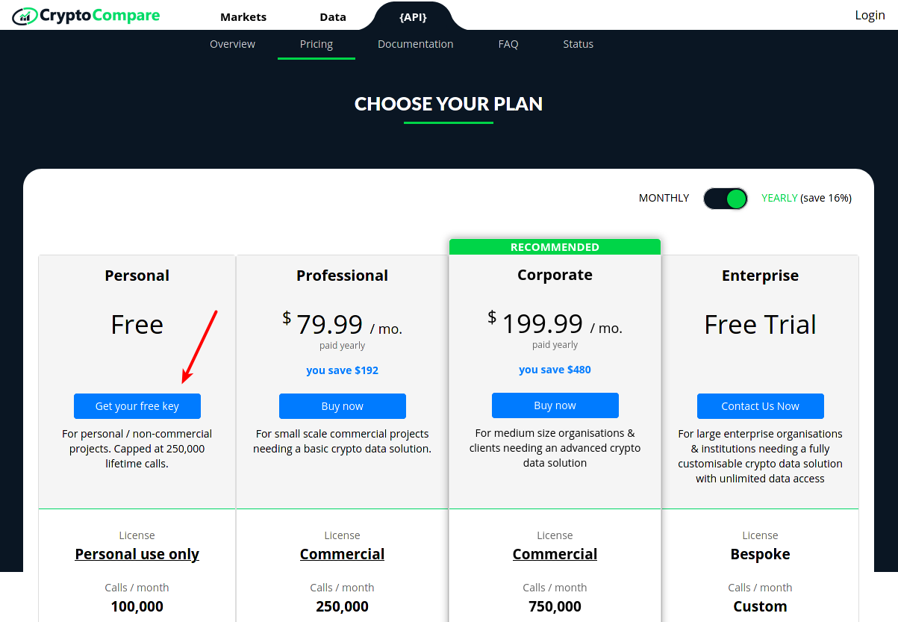
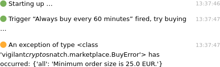

Configuration
Unfortunately we need to configure a few things before you can start automatic trading with this software. Most configuration is done in a YAML file. It is a syntax for hierarchical data and relies on indentation to show the hierarchy.
The configuration file needs to be created with a (programmer's) text editor. We will talk you through the necessary steps and show snippets to put into. Depending on your platform, the path should be this:
| Platform | Location |
|---|---|
| Linux | ~/.config/vigilant-crypto-snatch/config.yml |
| Windows | C:\Users\<User>\Application Data\Martin Ueding\vigilant-crypto-snatch\config.yml |
| macOS | ~/Library/Application Support/vigilant-crypto-snatch/config.yml |
Historic price API
In order to find a drop in the price, we need to know the historic price at a given point. We use Crypto Compare for that as they provide a free API. Go to their website and create an API key.

And retrieve your API key:

In the configuration file then add the following:
cryptocompare:
api_key: "your API key here"
Marketplaces
We currently support two marketplaces, Bitstamp and Kraken. You only have to configure one of them, but you can also configure both. When you start the program, you can just choose which marketplace you want to use today.
Kraken
Go to the Kraken API key page and create an API key which has the permission to trade.
There you need to create a new API key:

Be sure to select the Create & Modify Orders permission such that the program can actually execute orders. Give the least amount of permissions, you should not select Withdraw Funds if you don't want to enable the automatic withdrawal feature described below.

You will get an API key and an associated secret. In the configuration file you add a paragraph like the following. The first will be API key and the second will be the secret, like this:
kraken:
key: "YOUR KEY"
secret: "YOUR SECRET"
Fee policy
When you trade, you will have to pay a certain fee that depends on your Kraken account tier. Whatever these are exactly, you can choose whether you would like to have them taken away from your fiat or coin amount. If you let it take away from your coin amount, buying coin for 50 EUR will only cost exactly that, but you get a bit less coin. Should you rather choose to have it taken in fiat, you will get as much coin as you want, but it will cost you more fiat.
Kraken supports this as a flag to addOrder and has two options:
fcibprefer fee in base currency (default if selling)fciqprefer fee in quote currency (default if buying, mutually exclusive withfcib)
As explained in their glossary, the quote currency is fiat, whereas the base currency is the coin.
We support this choice via the option prefer_fee_in_base_currency, which is false by default, so the fee is preferred in quote currency. If you set this to true, you can instead have it in the base currency and only spend exactly as much as you want. For this add this line:
kraken:
…
prefer_fee_in_base_currency: true
Automatic transfer to wallet
For this marketplace we support automatic transfers to an external wallet when the crypto volume is large enough. We query the current fees and only do the transfer when the fees are below a certain percentage of the value to transfer.
In order to set this up, you first need to have a withdrawal target. Go to the funding page, click on withdraw BTC for example. Then use “Add Address” to create a new address and give it some name. I call mine simply “Wallet”. Then for each currency that you want to set up withdrawal for, add a matching group in the kraken section like this:
kraken:
…
withdrawal:
BTC:
target: "Wallet"
fee_limit_percent: 1.0
The API key that you use must have the Withdraw Funds permission.
After each trade the program will check whether you are above the fee limit and start the transfer. This way you can have your marketplace account as empty as you like.
Bitstamp
In order to use Bitstamp, you need to set up an API key with them that has the correct permissions to trade with. Go to the settings menu and create a new key.

Put this API key into the configuration file.
bitstamp:
username: "username here"
key: "key here"
secret: "secret here"
Polling interval
First you should set the polling interval that the main loop should use. It will wait this many seconds before checking again. For testing we found that 5 seconds is a good value, for production use 60 seconds should be absolutely sufficient.
sleep: 60
Triggers
You can define as many triggers as you would like. This is done in a section triggers. Let us show an example first and explain all the keys below.
triggers:
- coin: btc
fiat: eur
cooldown_minutes: 1440
volume_fiat: 26.0
delay_minutes: 1440
drop_percentage: 10
- name: "Medium drops"
coin: btc
fiat: eur
cooldown_minutes: 1440
volume_fiat: 26.0
delay_minutes: 1440
drop_percentage: 5
- coin: btc
fiat: eur
cooldown_minutes: 5000
volume_fiat: 26.0
There are different sub-types, but all of them have the following elements in common:
coin: The name of the crypto-currency, case insensitive.fiat: The name of the fiat currency, case insensitive.cooldown_minutes,cooldown_hours,cooldown_days: Time until a trigger can fire again. If multiple ones are given, only the one with the largest unit will be used.-
name: Optional human-readable name of the trigger.The internal name of the trigger can be derived from the options. This will give you technical names in notifications, so you might prefer to give them personal names. Additionally the name is used in the database to compute the cooldown. If you don't have a name specified and change any of the parameters, the internal name will change and cooldown doesn't apply any more.
-
start: Optional date time string which specifies the earliest execution of the trigger.This can be used if you have just created a bunch of new triggers, or made changes to them without keeping the
nameattribute fixed. By specifying a future point in time you can prepare a trigger without having it executed on the next run of the program.We use
dateutil.parserto parse the date. It will understand most formats, but the ISO format (YYYY-MM-DD HH:MM:SS) will certainly work.
Trigger strategy
We currently have two optional trigger strategies. All strategies also use the cooldown. If you do not specify any strategy keys, then it will just buy whenever the cooldown has expired. This is the “Dollar cost average” way.
You can use as many strategies as you like. They are connected via logical and, meaning that all strategies have to say “buy” in order for the trigger to fire.
Drop strategy
The first strategy is the drop strategy. It will look whether the price has dropped by a given percentage within a given delay. You could for instance look for a drop of 1 % within 60 minutes. You will need to specify these keys:
drop_percentagedelay_minutes,delay_hoursordelay_days: If multiple are given, only the one with the largest unit will be used.
You can specify a decimal number for the drop percentage, just be aware that it must contain a decimal point instead of a decimal comma.
Fear & Greed strategy
There is the Fear & Greed Index, which provides a market analysis via multiple factors. It is a number between 0 and 100. Low numbers mean that people are fearful and it might be good to buy. And high numbers mean that people are greedy and it might be a bad idea to buy.
You can specify the following key to make use of this strategy.
fear_and_greed_index_below: An integer value between 0 and 101 which is the exclusive upper limit for the fear and greed index. If you specify 50, then it will only buy for 49 or below.
Fiat volume strategy
There are two ways that you can determine the amount of fiat volume that you want to spend on each trigger execution.
First there is the fixed strategy, where you always spend a fixed amount. For that you need this key:
volume_fiat: Amount in fiat currency.
Alternatively you can specify a percentage of the amount of fiat currency that you have on the market. For this specify a percentage:
percentage_fiat: Percentage of fiat money to spend in each buy.
Choosing sensible values
But what shall I choose? What will give me the most return of investment? We don't have the truth either, but we recommend that you take a look at the evaluation interface that is linked on the usage page. The heatmap of drops gives you a good idea of which delays and drop percentages to use. The trigger simulation gives you an idea of how often they fire, and let you choose the amount of fiat to spend.
You can also come to the Telegram group, see support, and ask other users for their experience.
Telegram notifications
Optionally you can set up notifications via Telegram. This is not required, but a nice extra to allow monitoring from anywhere.
First you have to create a bot by talking to @botfather. It will lead you through a couple of steps:
- Type
/startto initiate the bot creation. - Then type
/newbotto create your bot. - It will ask you for the name of the bot. You can just use “vigilant-crypto-snatch” or something else.
- Next it will ask for a username of the bot. This is a technical thing, so it doesn't need to be pretty. It needs to be unique and end with
bot. So perhaps use something likevigilant_0f8704a83991_bot, where you just make up your own random letters.
It will give you an access token that you can use for the API. Enter that token into the configuration file:
telegram:
token: "Your bot token here"
level: info
You will need to write a message to the bot in order to open a direct conversation with it. This is necessary such that the bot can reply to you.
The level specified the messages that you want to receive. info gives sensible information, if you only want to receive information when something goes wrong, use warning. See the section in running for more details.
If the Telegram bot token is set up correctly, you will receive messages like this:

The severity of messages is color-coded with an emoji according to this mapping:
| Symbol | Severity |
|---|---|
| 🔴 | Critical |
| 🟠 | Error |
| 🟡 | Warning |
| 🟢 | Info |
| 🔵 | Debug |
The logging level is set to Info by default.